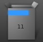
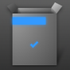
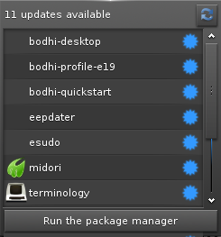
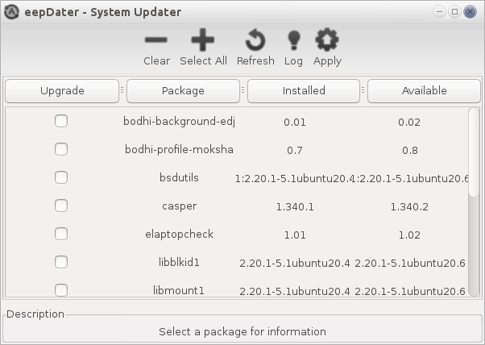
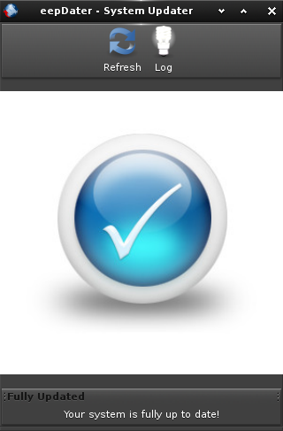

[click on any image to enlarge]
In most cases, you will want to have an Internet connection
established to install software in Bodhi Linux.
Please follow this link if you need assistance
Connecting to the
Internet.
Updating System via eepDater
The first thing to do after establishing an internet connection is to update your system.
There are multiple methods to achieve this, but
the simplest method is by using the eepDater application and widget, located on your top shelf. If updates are avialable, you will see this icon:

If your system is fully updated, you'll see this icon:

Note:This icon is not available on the Legacy version of Bodhi. You will need to manually launch eepDater from the applications menu.
A simple Left-Click on the icon will show you the list of updates that are avialable for your system:

To install the updates, click on the Run the package manager button. esudo will launch asking you for your password. Once permission from esudo is complete, you see another list of all avialable updates:

Here you have the option of selecting individual packages to update by selecting the checkbox under the "upgrade" collumn or you can quickly select all packages by clicking on the Select All button at the top. Once packages have been selected, click on the Apply button and the system will begin updating your system. When complete, you will see the window refesh and be left with an empty window:

Updating System via Terminology
While it is no longer recommended that users update via the command line, it is still possible to do so by running the following command in Terminology:sudo apt-get update && sudo apt-get -y dist-upgradeBodhi Linux AppCenter

The Bodhi Linux team has created the AppCenter as a very fast and simple way to install many common applications. While you won't find every application that you can install in Bodhi Linux at the AppCenter, you will find what we consider to be "best of breed" applications for each particular category.
The AppCenter is designed to work best with Midori, Bodhi's default web browser. It also provides several application-sets( a.k.a. meta-packages) that provide common applications and/or are chosen to meet a particular use case. Read about each to find out what they have to offer!
Here's a quick tutorial on how to install applications at the AppCenter:
-
Find your application.
If you already know the name of the application you wish to install, just type it in the search bar in the top right.
If not, simply browse through the categories listed on the front page. -
Navigate to the page.
For either method you choose to find your application you will be presented with a link.
Each application has its own page with a description of the application and a screenshot of it. -
Install it!
Simply click the "Install Now" button and enter your password when you are prompted for it. That's it! Your application and all of its dependencies will be automatically installed.
Synaptic Package Manager
The
Synaptic Package Manager, common to all
Debian GNU/Linux
based distributions, is not installed in
Bodhi Linux
by default. To install it click the icon/link below or use sudo apt-get install synaptic from the command line.
To access it, go to Main Menu>Applications>Preferences>Synaptic Package Manager.
With Synaptic Package Manager, you have access to all of the applications in the Bodhi Linux and Ubuntu repositories. (A repository is the server(s) where Linux distributions make applications available for you to install.)
Please see the Wiki for complete instructions on using Synaptic Package Manager.
apt-get & dpkg (advanced)
The command-line tools apt-get and dpkg
are the "backend" to the above mentioned methods of installing
applications. Advanced users may feel free to use these tools from the
command line, but their use is beyond the scope of this document.
man apt-get
or
man dpkg
for the manual of the respective command.
Installation from source code is readily available for advanced users, as well.